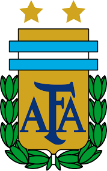

| Q A T A R 2 0 2 2 | ||||||||
| ULTIMA HORA | CALENDARIO | CLASIFICACION | PRONOSTICOS | SELECCIONES | NEWS LETTER | GOLES | UNIVERSO MUNDIAL | VIDEO EN DIRECTO |
Messi lleva a hombros a Argentina ante Australia
|  | ARGENTINA | 2 | - | 1 | AUSTRALIA |
Colgada de Messi , Argentina apunta ya a los cuartos de final tras un partido ulceroso de entrada. Hasta que Messi, aburrido, puso a la Albiceleste a sus pies para consuelo argentino y de los que mendigaban una miguita de fútbol. Clavó de la nada el 1-0, cambió la cara al choque y quebró a una Australia que en la última jugada casi improvisa la prórroga. Australia, una selección jornalera con reclutas del Columbus Crew, el Melbourne o el Fagiano Okayama, puso colmillo y nada más, porque nada más tiene.
Y ya es mucho haber transitado por los octavos por segunda vez en su historia. Un equipo que sudó como una regadera para alcanzar Qatar tras una eliminatoria con Emiratos y otra angustiosa con Perú. En Qatar, Messi mediante, el heroísmo de la debilidad no tuvo más recorrido. Enfrente, Argentina. Un tiro al aire. ¿La que se desvaneció ante Arabia, la que tuvo pulso con México o la que dio el estirón frente a Polonia? En Rayán, una Argentina aparatosa, sin chispa, sin volumen. Messi y la nada. Sin Di María, lesionado, relevado por el "Papu Gomez" no había forma de que algún camarada rimara con el capitán. Ante el dique de los socceroos, hasta que Messi dijo basta, apagón total argentino.
Negada por las alas, tiesa por el embudo y sin mordida para rescatar la pelota. Por fuera, el deficiente Molina y el intrascendente Acuña no ventilaban. Álvarez y el Papu, también plantados en las orillas, no son extremos con vuelo.